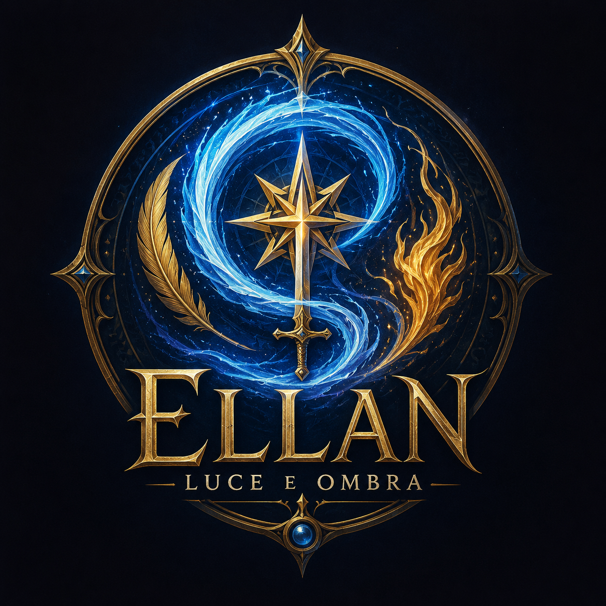
Ellan – Luce e Ombra
Un'ambientazione fantasy originale per giochi di ruolo, dove il Mana respira sotto il mondo, gli dèi camminano tra i mortali e la verità sulla storia di Ellan è stata dimenticata da secoli.
Cos'è Ellan?
Ellan è un mondo fantasy pensato per campagne di gioco di ruolo, nato per raccontare storie di eroi imperfetti, antiche civiltà, magia viva, divinità ambigue e verità sepolte.
Può essere giocato con diversi regolamenti, mantenendo al centro l'ambientazione, i personaggi, le fazioni e i conflitti morali che definiscono il mondo.
Scopri Ellan in Video
Preferisci iniziare con un video? Le Pillole di Ellan sono brevi approfondimenti che spiegano il mondo di Ellan in pochi minuti, senza spoiler.
Cosa troverai
Stirpi originali, regni, leggende, magia, religioni, fazioni nascoste, figure leggendarie, canzoni popolari, materiali di gioco e strumenti per iniziare subito a vivere Ellan.
Biblioteca di Ellan
Manuali, quickstarter, canzoniere e materiali scaricabili raccolti in un unico scaffale.
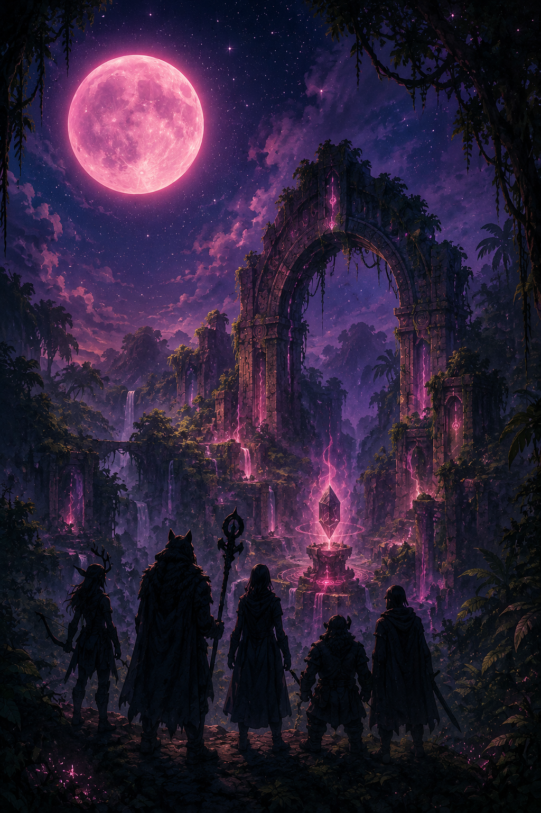
Quickstarter
Le regole essenziali, una panoramica dell'ambientazione e un'avventura introduttiva per iniziare subito.
📖 Scarica PDF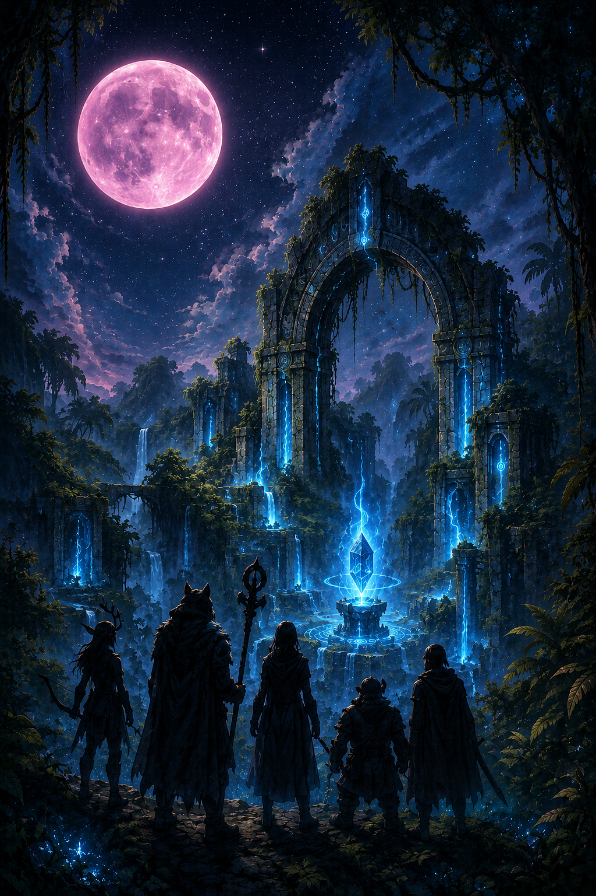
Manuale del Giocatore
Stirpi, regni, magia, carriere, leggende e tutto ciò che un personaggio può conoscere del mondo di Ellan.
📦 Scarica ZIP
Manuale del Master
Segreti, cosmologia, fazioni nascoste, verità perdute e strumenti per condurre campagne complete.
📦 Scarica ZIP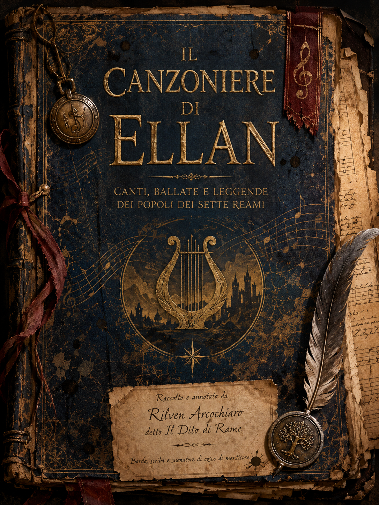
Canzoniere di Ellan
Canti popolari, inni, ballate e appunti raccolti dal diario di Rilven Arcochiaro.
🎼 Scarica PDFCronache di Ellan
Racconti, leggende e memorie ambientate nel mondo di Ellan. Storie di re, regine, eroi, esploratori e figure avvolte dal mistero.
Le Cronache possono essere lette anche senza conoscere il gioco di ruolo: sono finestre narrative sui protagonisti, i regni e le ombre di Ellan.
Ellan – Luce e Ombra: Il Gioco Tattico
Un gioco di carte tattico Print & Play ambientato nel mondo di Ellan. Scegli i tuoi eroi, equipaggiali con oggetti e artefatti, affronta nemici, eventi e luoghi iconici in battaglie rapide su una griglia 4x5.
Può essere giocato in solitaria contro l'IA oppure in modalità competitiva per 2 giocatori.
Contenuto del Set Base: 🦸 24 Eroi • 👹 13 Nemici • ✨ 10 Artefatti • ⚔️ 10 Oggetti • 🌍 8 Luoghi • 📜 11 Eventi • 🐾 3 Evocazioni
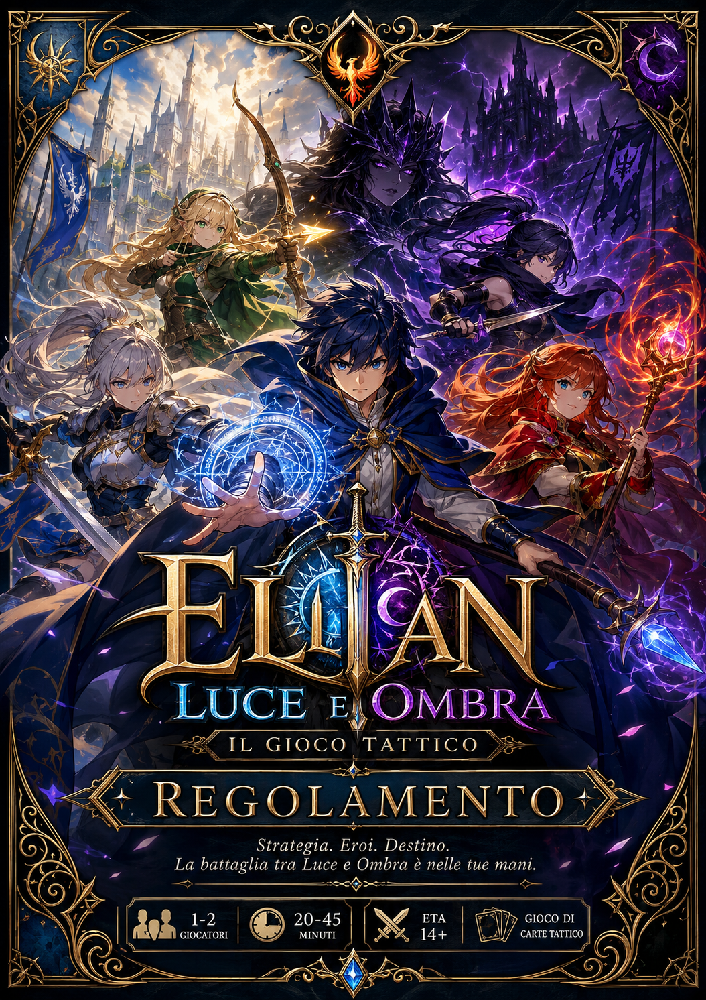
Regolamento
Le regole complete del gioco tattico: movimento, combattimento, obiettivi, IA, scenari, evocazioni, oggetti e artefatti.
Scarica Regolamento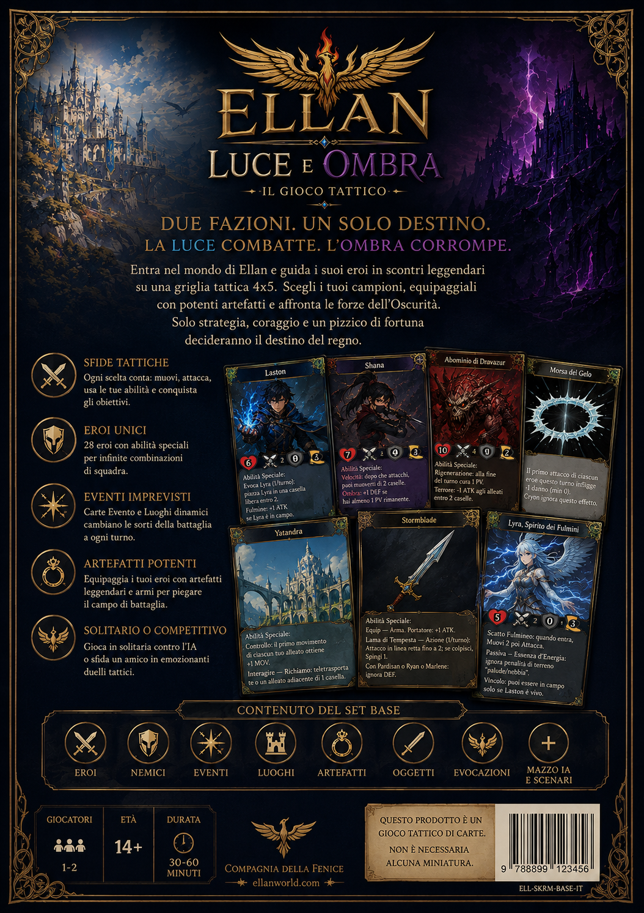
Carte Print & Play
Eroi, nemici, eventi, luoghi, oggetti, artefatti ed evocazioni pronti da stampare, ritagliare e giocare.
Scarica Carte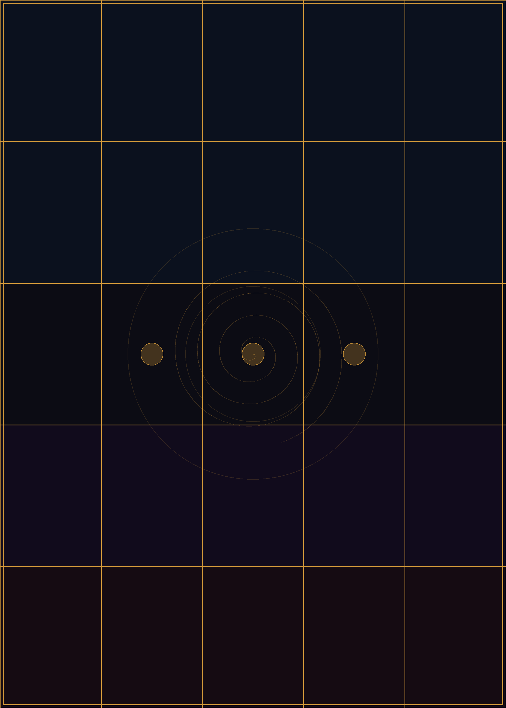
Plancia e Segnalini
La griglia 4x5, i segnalini obiettivo, i token dei personaggi evocati e gli elementi utili per iniziare subito.
Scarica PlanciaMateriale gratuito Print & Play. Non è necessaria alcuna miniatura: puoi giocare usando segnalini, pedine o token stampabili.
Mappe di Ellan
Dalle vaste terre dei Reami alle gelide Icelands, queste mappe aiutano viaggiatori, cronistorici e avventurieri a orientarsi nel mondo di Ellan. Come per le storie e le leggende, mostrano come il mondo viene percepito piuttosto per come è veramente.
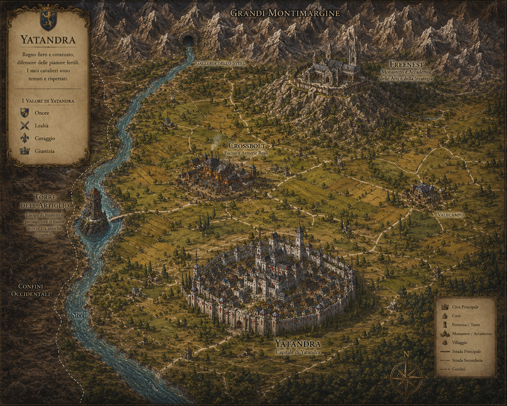
Yatandra
Il regno governato da Re Pardisan Stormblade e dalla Regina Liselle Silverhawk.
Personaggi Famosi di Ellan
Re, regine, eroi, esploratori e comandanti. Questi sono alcuni dei nomi più noti del mondo di Ellan: figure ancora vive, raccontate nelle taverne, studiate dai cronistorici e ricordate nei regni di tutto il continente.
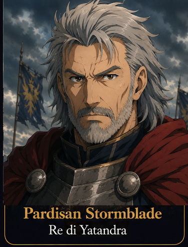
Pardisan Stormblade
Re di Yatandra
Cavaliere, sovrano e avventuriero. Le sue imprese lo hanno reso uno dei personaggi più rispettati dei Reami e un simbolo vivente degli ideali cavallereschi.
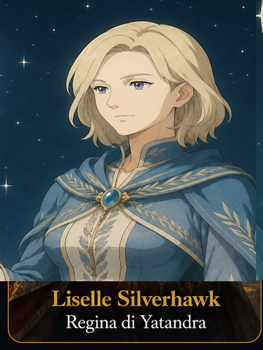
Liselle Silverhawk
Regina di Yatandra
Governante amata dal popolo e stratega brillante. È famosa per la sua saggezza, la sua fermezza e la capacità di guidare Yatandra anche nelle crisi più dure.
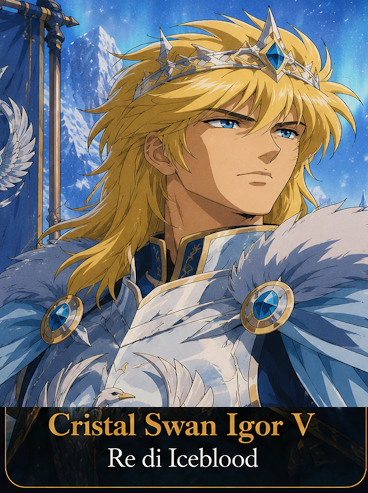
Cristal Swan Igor V
Re di Iceblood
Ultimo erede della dinastia Swan Igor. Il suo ritorno dall'esilio e la riconquista del trono sono diventati una delle storie più celebri delle Icelands.
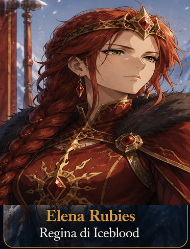
Elena Rubies
Regina di Iceblood
Diplomatica, guerriera e simbolo di fedeltà. Durante l'esilio di Cristal mantenne vive le speranze dei lealisti, diventando una leggenda vivente.
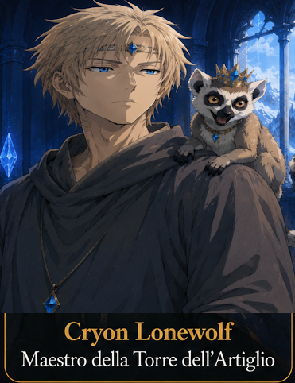
Cryon Lonewolf
Maestro della Torre dell'Artiglio
Esploratore, studioso e comandante della più famosa accademia dei Reami. Molti avventurieri sognano di essere accolti sotto la sua guida.
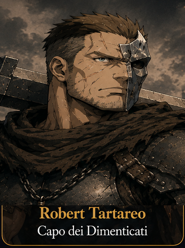
Robert Tartareo
Capo dei Dimenticati
Colosso di muscoli e mente affilata, guida il popolo dei Dimenticati con forza e intelligenza. Per alcuni è un eroe, per altri una figura inquietante.
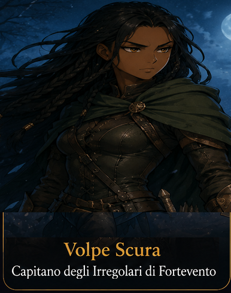
Volpe Scura
Capitano degli Irregolari di Fortevento
Avventuriera, esploratice e leggenda vivente delle terre selvagge. Le storie sulle sue missioni sono così numerose che nessuno sa più distinguere la verità dall'esagerazione.
Una Lettera d'Amore ai Cartoni Animati
Molte delle canzoni, delle sigle e dei video presenti in questa pagina sono un omaggio ai cartoni animati che hanno accompagnato l'infanzia di un'intera generazione.
Da Yamato a Lupin III, da Yattaman a Creamy, passando per robot giganti, eroi spaziali, principesse, esploratori e avventurieri: le sigle degli anni '80 e '90 hanno insegnato a molti di noi che una canzone può raccontare una storia, un sogno o un mondo intero.
Le musiche e i testi di Ellan nascono con lo stesso spirito. Non vogliono imitare quelle sigle, ma rendergli omaggio: raccontare personaggi, leggende, speranze e avventure attraverso la musica, come accadeva ogni pomeriggio davanti alla televisione.
Se qualche melodia vi farà sentire di nuovo bambini, allora avranno raggiunto il loro scopo.
Video e Sigle di Ellan
Animazioni, sigle e brevi filmati dedicati ai personaggi e alle leggende di Ellan. Alcuni video possono contenere anticipazioni sulla campagna.
Zoei
Rinmu
⚠️ Contiene possibili spoiler
Dany Fogliarossa
La Combattente Danzante
⚠️ Contiene possibili spoiler
Lyra
Harukel
⚠️ Contiene possibili spoiler
Aurora
⚠️ Contiene possibili spoiler
Halrek dell'Ombra
⚠️ Contiene possibili spoiler
Kasumi
⚠️ Contiene possibili spoiler
Archivio Musicale di Ellan
Le canzoni di Ellan sono raccolte nel Canzoniere e rappresentano inni, ballate e canti popolari provenienti dai diversi regni del mondo. Premi ascolta per avviare il brano nel player in basso, oppure scarica direttamente l'MP3.
| Brano | Ascolta | Scarica |
|---|---|---|
| Inno ad Alidor – Luce del Giuramento | ⬇️ MP3 | |
| Su il Vento, Irregolari! | ⬇️ MP3 | |
| A Chansonne dove canta il cuore | ⬇️ MP3 | |
| La Rosa e la Spada | ⬇️ MP3 | |
| L'Esilio e la Fiamma | ⬇️ MP3 | |
| La Ballata di Pardisan Stormblade | ⬇️ MP3 | |
| La Casa che Appare | ⬇️ MP3 | |
| Sotto gli Occhi della Torre | ⬇️ MP3 | |
| Né Luce Né Perdono | ⬇️ MP3 | |
| La Lancia che Fu | ⬇️ MP3 | |
| Il Canto dei Figli della Vergogna | ⬇️ MP3 | |
| L'Amore della Sirena | ⬇️ MP3 | |
| Sotto Maschera il Cuore | ⬇️ MP3 | |
| La Benedizione del Viandante | ⬇️ MP3 | |
| Cammino tra le Rovine Elfiche | ⬇️ MP3 | |
| Forgia del Nord | ⬇️ MP3 | |
| La Nebbia di Scuracque | ⬇️ MP3 | |
| La Nebbia di Scuracque – Versione alternativa | ⬇️ MP3 |